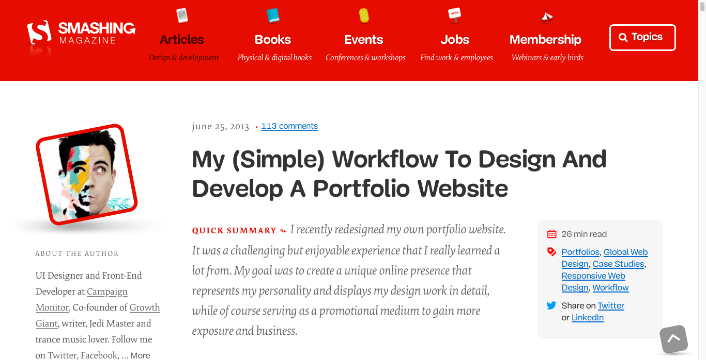
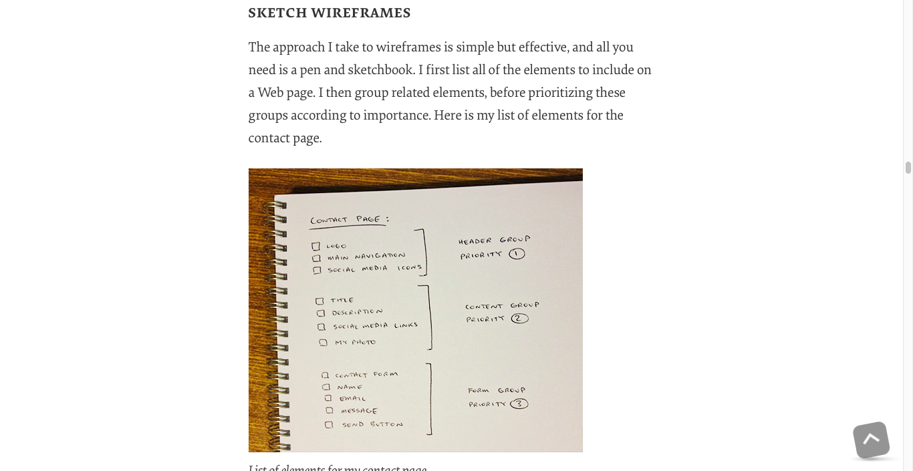

Target audiences are peers, friends and anyone who creates or is interested in photography, design, and visual arts. The part of my audience that is interested in looking for inspiration or to do some collaboration with other artists alike will enjoy the layout of the website. While surveying the field, I found that portfolio websites focus on simplicity and minimalism, but use their assets to make the site vibrantly pop. According to Adham Dannaway in his article on Smashing Magazine where he speaks about building his portfolio website, “…I needed to be able to write articles, display my design work and have people contact me easily. I also wanted it to be unique and memorable, while representing my personality.” It’s a very useful article that reiterates the idea of using unique content and assets in the website to inject some personality and individuality in the user experience. Furthermore, Dannaway says “Nothing is worse than a vague portfolio of random images with no context or explanation. Including only the type of work you’re looking to do more of, rather than all of your work, will help you target the right clients.” This is very useful information and will help with the overall flow of my website. Considering that I have just embarked on this journey to produce professionally developed work, it will be difficult to rely on just one medium to display. Therefore my site will still have a couple categories of content in a wider-range, instead honing in on a specific one that I excel in the most (e.g. illustrations vs. digital art, or photography, etc.). Yet, this information offers a useful insight, which is to be simple and have a clear/direct approach to the work I wish to share, that way the user doesn’t juggle too much information and lose track within the website.

